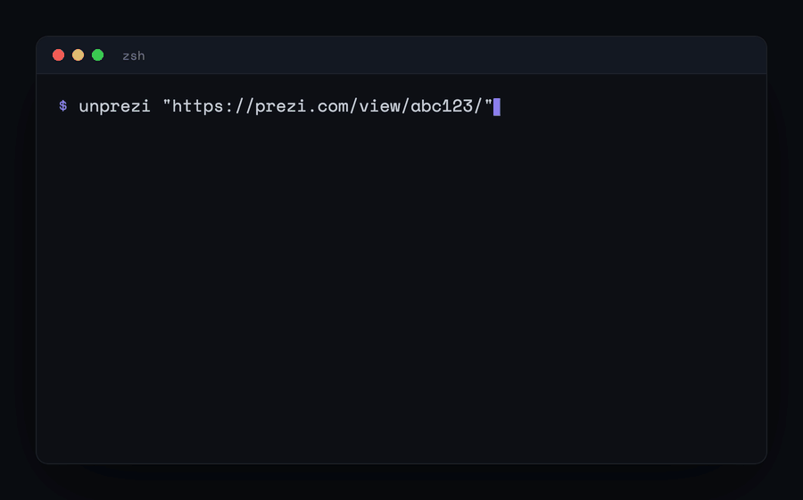

unprezi plays a prezi.com presentation in a headless browser, screenshots every step along the path, and stitches it into a clean PDF. No Prezi Pro account.

Modern prezi.com/view/ share links and older prezi.com/<id>/ ones.
If you can open the link, you can export it. It only sees what a share link shows.
One PDF page per stop on the path, at the resolution the viewer renders.